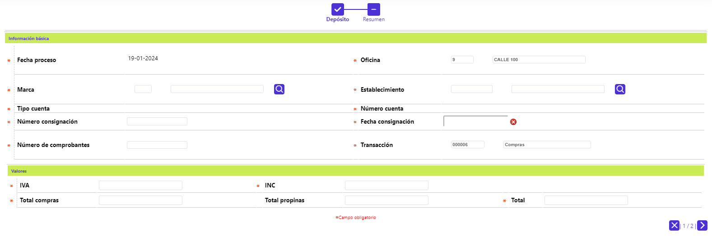
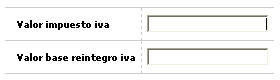
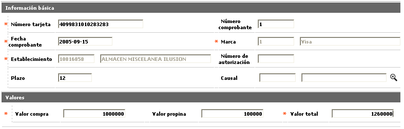
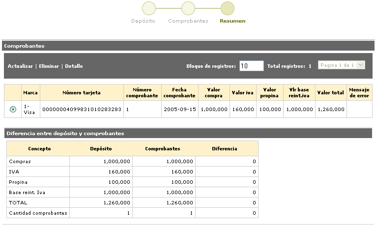
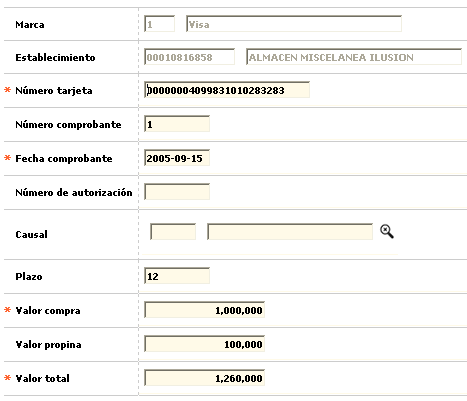
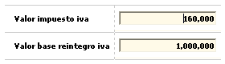
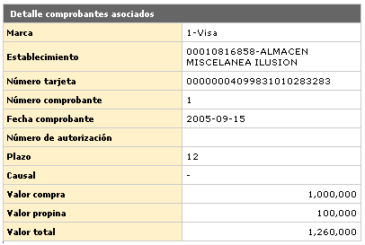

Captura de Movimientos oficina
Adicionar Compras: Si el usuario a seleccionado la Transacción Compras e invoca la opción Adicionar, se despliega un wizard de tres pasos Depósitos, Comprobantes y Resumen.
Depósitos: Conjunto de datos relacionados con las consignaciones efectuadas por los establecimientos, ingresando los totales por cantidad de comprobantes, de valores de consumo, de propinas, del descuento aplicado (dependiendo del valor del parámetro de Captura requiere ingreso descuento de la opción Parámetros operativos), valor del impuesto IVA y del neto de las mismas.

Fecha proceso |
Campo de salida o no ingresable, que contiene la fecha del sistema seleccionada en el filtro inicial. |
Oficina |
Campo en el que se muestra el código de la oficina y descripción de la oficina para la cual se va a capturar. |
Marca |
Campo que posee lista de valores poblada mediante la opción Franquicias del Núcleo. Si la entidad requiere generar contabilidad por marca o franquicia, no debe mezclar dentro del mismo lote o tapa movimiento de diferentes franquicias. |
Establecimiento |
Campo alfanumérico de 11 dígitos, obligatorio, en el que se registra el código único que identifica, ante la franquicia, al establecimiento donde se realiza el consumo. |
Tipo cuenta |
Identifica si el número de cuenta del establecimiento corresponde a Corriente, Rotativo o Ahorros. |
Número cuenta |
Campo sobre el que se despliega el número de la cuenta de depósitos asociada al establecimiento. |
Número consignación |
Campo numérico de 7 dígitos, no obligatorio, corresponde al número que identifica cada consignación. |
Fecha consignación |
Campo tipo fecha en formato DDMMYYYY, debe contener la fecha registrada en cada consignación. El sistema confronta este dato con el plazo fijado para la Marca en la opción Información de establecimientos y en caso de no encontrar allí ese dato, lo tomará de los Parámetros operativos. |
Número comprobantes |
Campo numérico de 5 dígitos, no obligatorio, en el que se ingresa la cantidad de comprobantes que componen o integran cada consignación. |
Transacción |
Campo que posee la transacción seleccionada en el filtro inicial. |
Total compras |
Campo numérico con capacidad para una suma hasta de 16 dígitos incluidos dos decimales, no obligatorio, que contiene el monto de los consumos efectuados en el establecimiento que consigna, no incluye los valores correspondientes a propinas, comisiones (descuento) e IVA. |
Total propinas |
Campo numérico con capacidad para una suma hasta de 16 dígitos incluidos dos decimales, no obligatorio, que contiene el monto total de las propinas otorgadas por los tarjetahabientes y reflejadas en los comprobantes de cada consignación. |
Total |
Campo numérico con capacidad para una suma hasta de 16 dígitos incluidos dos decimales, no obligatorio, que contiene el monto total bruto o neto de los consumos efectuados, dependiendo del valor del parámetro Captura requiere ingreso descuento definido en la opción Parámetros operativos, esto es, consumos más propinas, más IVA o consumos más propinas menos descuentos, más IVA por cada consignación. |
Opción de localización: Si el usuario invoca el globo de la parte superior derecha, el sistema despliega esta opción con los siguientes campos:

Valor impuesto iva |
Campo numérico con capacidad para una suma hasta de 16 dígitos incluidos dos decimales, no obligatorio, que permite el ingreso del valor reportado por el establecimiento por dicho concepto. |
Valor base reintegro iva |
Este campo despliega el valor que sirve como base para el calculo del reintegro de los 2 puntos de IVA sobre compras y que corresponde al valor de los bienes y/o servicios gravados con una tarifa del 16%; a partir del 2005 también quedaron incluidos aquellos que estén gravados con un IVA del 10%. |
Comprobantes: Conjunto de datos que detallan cada uno de los vouchers o comprobantes asociados a cada consignación.

Número tarjeta |
Campo alfanumérico de 23 dígitos, no obligatorio, en el que se digita el número de la tarjeta mediante la cual se realiza el consumo o utilización, el sistema valida la existencia de la misma dentro del sistema y asigna los ceros a la izquierda hasta completar la longitud total del campo. |
Número comprobante |
Campo numérico de 7 dígitos, no obligatorio, en el que se registra el número del voucher o comprobante correspondiente al consumo. |
Fecha comprobante |
Campo tipo fecha, en formato DDMMYYYY, debe contener la fecha física de cada uno de los comprobantes, es la base para determinar la antigüedad de los mismos y verificar que no excedan el plazo máximo para su consignación determinada en Parámetros operativos. |
Marca |
Campo que muestra la Marca seleccionada en la opción anterior Depósitos. |
Establecimiento |
Campo en el que aparece por defecto el código único del comercio que realiza la consignación. |
Número de autorización |
Campo alfanumérico de 6 dígitos, no obligatorio, en el que se registra el número de autorización del Pago del impuesto asignado por el sistema o por la franquicia. |
Plazo |
Campo numérico de 2 dígitos, no obligatorio, en el que se relaciona la cantidad de periodos solicitados por el tarjetahabiente en el voucher para cancelar la compra efectuada. En caso de no digitarse el sistema tomará los valores por defecto señalados en los parámetros de Transacciones por empresa del Núcleo. |
Causal |
En el momento de la captura del comprobante el usuario puede evidenciar inconsistencias en los comprobantes, tales como falta de firma, falta de sellos, etc., previendo posibles fraudes. El campo provee de una lista de valores poblada previamente en la opción Causales de rechazo de transacciones del Núcleo, las cuales tienen la característica de ser causal visual, de las cuales el usuario selecciona la que se ajusta al evento sucedido. |
Opción de localización: Si el usuario invoca el globo de la parte superior derecha, el sistema despliega esta opción con los siguientes campos:
Resumen: Este formulario muestra la comparación entre los totales del Depósito y el número de Comprobantes que lo conforman. Adicionalmente, cuenta con las opciones Actualizar, Eliminar, y Detalle

Actualizar: Al activar ese enlace se despliega un formulario en el cual los únicos campos modificables son: Número tarjeta, Número comprobante, Fecha comprobante, Número autorización, Causal, Plazo, Valor compra, Valor propina, y Valor total.

Igualmente se pueden modificar los campos de la opción de localización.

Detalle: Si el usuario invoca la opción Detalle se despliega el siguiente formulario. En él se puede consultar también la opción de localización, a través del globo ubicado en la parte superior derecha.
